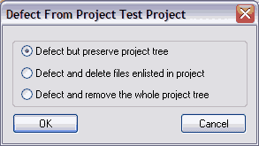

To defect from a project (stop being part of the collaboration), select Defect (Delete) from the Project menu. When you defect from a project, you may delete or keep project files. The default is "Defect but preserve project tree". Even if you choose to delete the files during Defect, they will end up in your recycle bin.
